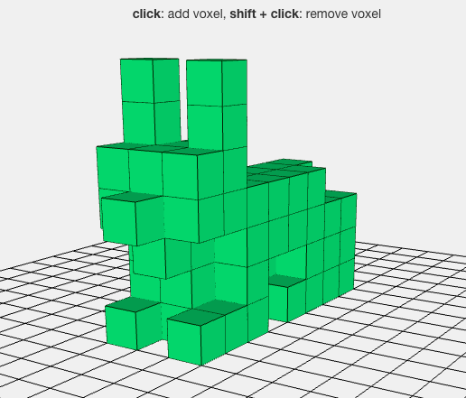
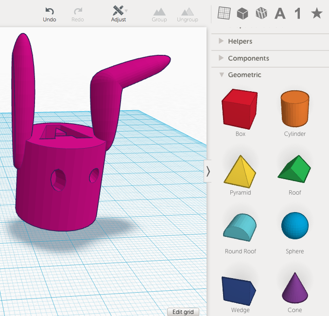
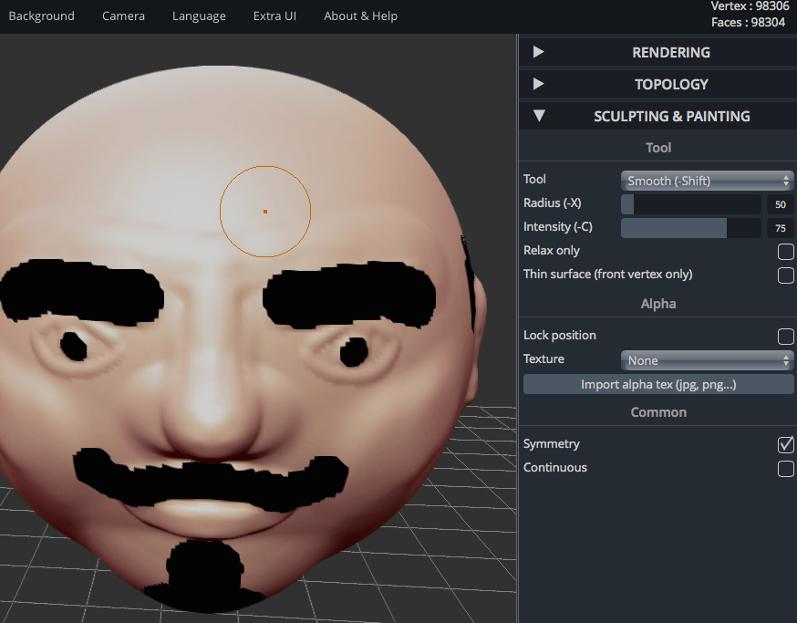
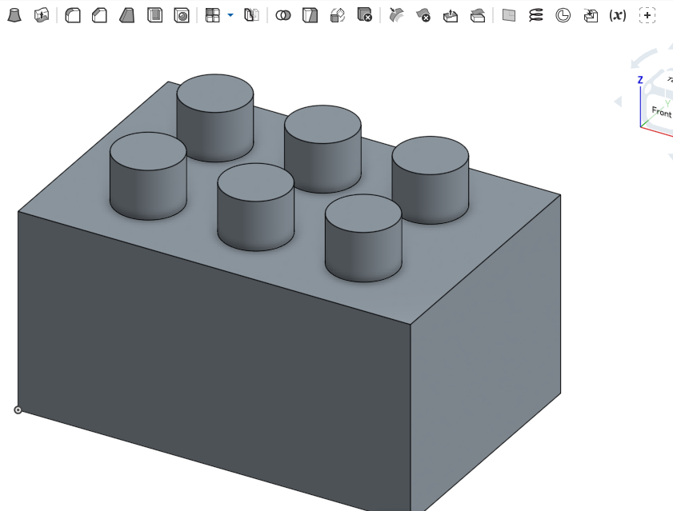
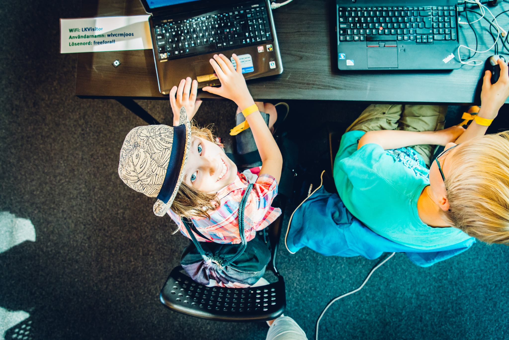

SummerCamp 2016
Den 13-17 juni hålls CoderDojo SummerCamp på Creactive i Linköping. Här hittar ni som är deltagare eller bara undrar vad vi hittar på under lägret information.
För att se vad vi gör följ oss på Facebook eller vår instagram ....
Den 13-17 juni hålls CoderDojo SummerCamp på Creactive i Linköping. Här hittar ni som är deltagare eller bara undrar vad vi hittar på under lägret information.
För att se vad vi gör följ oss på Facebook eller vår instagram ....
Vi kommer att hålla till på Creactive i Mjärdevi Sciencepark, Linköping och MakersLink, på Westmansgatan 47, på tisdag eftermiddag. Se till att du som hämtar vet var vi är!
Föräldrar är välkomna att hälsa på under drop-in, drop-off, fredag eftermiddag och under redovisningar, men tänk på att visa hänsyn genom att inte störa eller lämna under redovisningen.
Varje dag checkar man både in och ut, lämna namnlappen till din coach när du går hem!
| 8:00 | In-checkning |
| 8:15 | Välkomnande i Korallrevet. Här ska även föräldrar vara med för att höra viktig information om lägret! |
| 8:45 | Lekar, dojo och fikapaus |
| 11:00 | Scratch-föreläsning och dojo |
| 12:00 | Lunch i Korallrevet |
| 13:00- | Scratch-dojo |
| ca 14:00 | Lek |
| -15:30 | Scratch-dojo |
| 15:40 | Redovisningar |
| 16:00-17:00 | Drop-out |
Börja med
Gör en guide eller två på code.org. Om du är under 8 år kan det vara lagom att börja med Flappy och fortsätta med Minecraft, annars rekommenderar vi Frozen
Språk går att ändra längst ner på sidanUtmaning: Om du blir klar snabbt kolla på koden i ett exempel du tyckte var roligt! Kan du lista ut vad som betyder vad? Vad gör for och if inne i minecraftkoden?
Utmaning: Försök lösa kluriga pussel på blocky-games
Scratch
Vi kommer att fortsätta med Scratch, som också använder block för att programmera.
Här är det bra att logga in på ett konto så att dina projekt sparas. Skapa ett konto om du inte har ett.
Tips för scratchande Ta scratch-kort och gör ett spel utifrån dem. Glöm inte att lägga tillbaka kortet när du är klar med det.
Det finns både videos och text med tips på coola saker man kan få till på scratch. Kom ihåg att du kan sätta ihop bitar från olika spel för att skapa något ännu coolare
För att kunna dela projekt måste man trycka på en länk i mailet man fick när man skapade kontotNästan hela dagen spenderas på MakersLink där vi ska få testa lite olika workshops. Adressen är Westmansgatan 47. MakersLink är en ideell förening för alla som är kreativa och gillar att skapa. Lokalen är öppen flera kvällar i veckan och är utrustad med både 3D-printers och andra spännande maskiner. Kom gärna och hälsa på igen!
| 8:00-9:00 | Drop-in |
| 9:50 | Buss till MakersLink |
| 12:00 | Lunch, utomhus om fint väder |
| ca 14:40 | Lek |
| 16:00-17:00 | Drop-out från MakersLink |
Det finns många program man kan skapa 3D-modeller i och det finns många olika sätt. Alla dessa är online och kräver ingen installation.
 Klicka här för att bygga ihop "voxels" (boxar) och modellerna ser ut som i Minecraft. Det är jättelätt att skapa något coolt!
 I TinkerCad kan du sätta ihop färdiga objekt, det är ganska lätt att komma igång
 I sculptGl kan du ändra en boll och modellera fram något knasigt, coolt och annorlunda. Det är lätt att komma igång, men svårt att skapa precis det man vill
 OnShape är ett jättebra CAD-program som du kan skapa något precis så du vill ha det, men det är svårt att lära sig allt
När du har en färdig 3d-modell kan du göra den med coola hål i med LÄNK om du vill
Hämta en version av typen STL av din modell och döp den till DIN_FÄRGGRUPP+DITT_NAMN.stl
För andra året i rad ordnar vi CoderDojo SummerCamp. Mer info om plannering och lägret kommer inom kort.
Projektledare för lägret i år är Ingela Rossing och Linnea Rothin.
Vi kommer att ha ett läger vecka 24 i Linköping.
Har du frågor skriver du "fråga + ämne" i ämnesraden.
Har du tips på någon cool plats för studiebesök, en person som borde komma och hälsa på oss eller en kul aktivitet vi borde hålla? Maila oss med ämnet "Tips".
Kontakta oss på coderdojo.summercamp@gmail.com
**FRÅGOR SOM RÖR DELTAGARNA** Fråga: Vad krävs för att mitt barn ska få vara med? Svar: Barnet ska vara mellan 7 och 17 år och kunna följa enklare skriftliga instruktioner samt enklare addition och subtraktion. Detta då vi har begränsat antal coacher, och för att barnet ska få ut så mycket som möjligt av lägret.